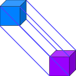

ObsidianOS
The meta Linux distribution with A/B Partitioning.
A/B Partitioning
With A/B partitioning, updates are atomic (optional). If an update fails, you can simply reboot into the previous partition, ensuring your system is always bootable.
Multiple bases
Enjoy the power and flexibility of Arch, Debian, Gentoo, or even Void, with the power of A/B Partitioning
Stable and Reliable
Built on the stability of ext4, ObsidianOS provides a reliable computing experience without the complexities of other filesystems.
Choose your own base
Whether you like Arch, Debian, Gentoo or even Void! If it exists, there's an ObsidianOS Edition of it. If not, there will be!


No enforced immutability
Yes! Immutability is completely optional, and even atomicity! you can enjoy A/B partitions while being on the bleeding edge!